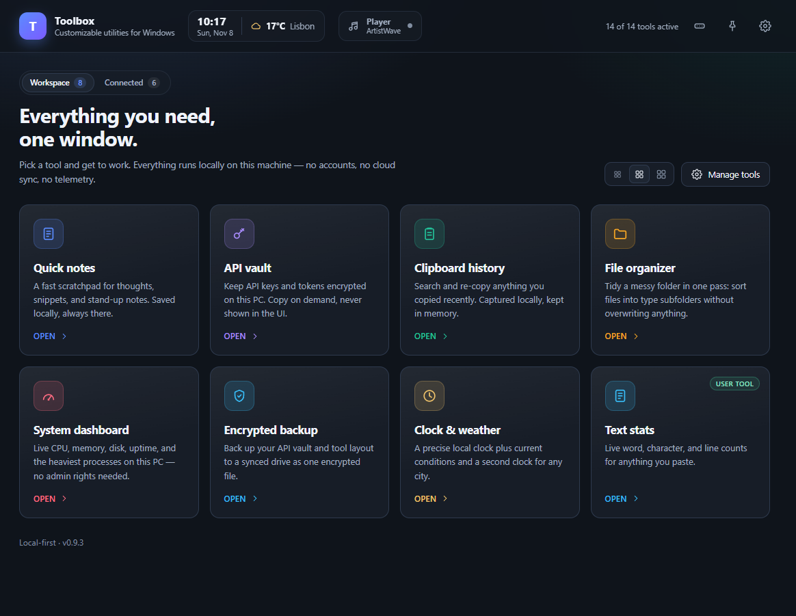
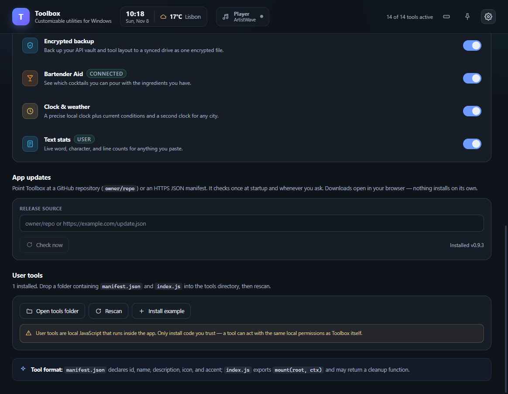
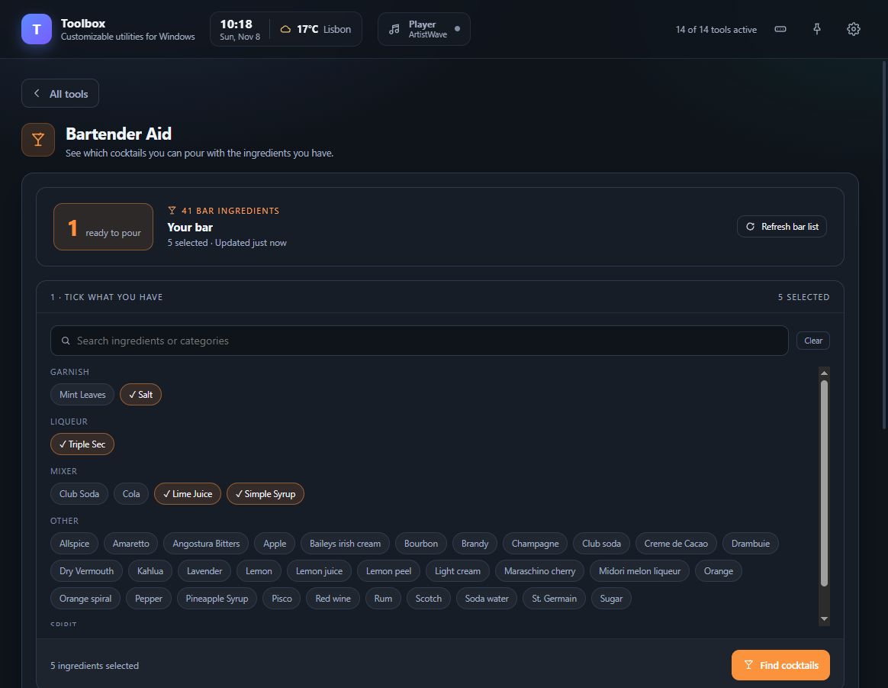

Quick notes
A scratchpad for thoughts, snippets and stand-ups. Saved locally, always there.
v0.9.3 · Windows 10 & 11 · MIT
Your private Windows toolbox — no account, no cloud. Fourteen small tools for notes, keys, files and feeds, all running locally on your PC.
Per-user installer · No admin rights · Portable build

A look inside
Three screens, one window. Every tool opens in place, with the header clock, weather and player always within reach.


The toolkit
Every tool reads and writes locally. Open one, finish the job, close it — nothing syncs in the background.
A scratchpad for thoughts, snippets and stand-ups. Saved locally, always there.
Keys and tokens encrypted on this PC. Copy on demand — values are never shown again.
Search and re-copy anything you copied recently, kept in memory on your machine.
Sort a messy folder into type subfolders in one pass — without overwriting a file.
Live CPU, memory, disk and uptime, plus the heaviest processes — no admin rights.
Vault and layout exported as one AES-256-GCM file, locked with your passphrase.
A precise local clock, current conditions and a second clock for any city.
Word, character and line counts for anything you paste, updated as you type.
Read-only inbox alerts over IMAP, with an app password stored encrypted on this PC.
Pull requests, reviews and mentions at a glance, with Windows alerts and your own token.
Follow feeds you choose and keep an eye on a few coins, without another tab.
A compact music player that sits in the header while you work.
Also inside Bartender Aid Custom user tools Mini bar Adjustable card sizes Built-in update checker
Private by design
Toolbox has no backend and no sign-in. Notes, keys, clipboard history and layout live in files on your PC — there is no account to create and no analytics SDK inside.
No analytics, no crash reporting, no device identifiers. There is no server to receive them.
Secrets are sealed with Windows safeStorage and never handed back to the interface.
One encrypted file for vault and layout, unlocked only by a passphrase you choose.
Only requests you switch on — and none of them carry an account or an identifier.
Toolbox/<version> as the only user agent.
HTTPS
Updates that ask first
Toolbox checks a source you control, then hands the download to your browser. The app never fetches or installs a build on its own.
Use owner/repo, a GitHub repository URL, or your own HTTPS JSON manifest.
Once at startup and whenever you press Check now. HTTPS only; loopback and private addresses are rejected.
An Update pill appears in the header. The details page opens the release in your browser — nothing installs by itself.
The app never downloads or installs a build itself.
Straight answers
No. The builds are not code-signed yet, so SmartScreen warns about a new, unknown publisher. Download only from the official Releases page, then choose More info → Run anyway. A code-signing certificate is planned; until then the warning is expected.
No. It checks the release source you enter at startup and on demand, then shows an Update pill. The download opens in your browser and you install it yourself. The app never downloads or runs an installer.
None. There is no telemetry, no analytics and no crash reporting. The only network requests are the ones you enable — weather, feeds, Gmail, GitHub, crypto prices, the ArtistWave player — and the occasional update check. All of them are listed above.
In Toolbox's local app data folder (%APPDATA%\Toolbox). The vault is sealed with Windows DPAPI; backups are a single AES-256-GCM file. Uninstalling keeps app data by default, so remove the folder yourself if you want a clean slate.
Yes — MIT licensed. Read, fork, modify and redistribute the source on GitHub. There is no paid tier and no account.
The per-user installer needs no admin rights and adds Start Menu and desktop shortcuts. The portable build is a single executable you can run from anywhere, including a USB drive. Both run the same app.
Not today. Toolbox targets Windows 10 and 11 on x64, and several tools rely on Windows APIs such as DPAPI.